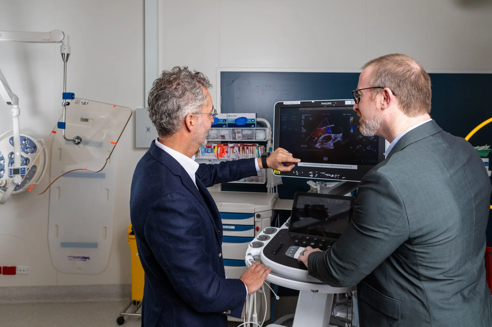
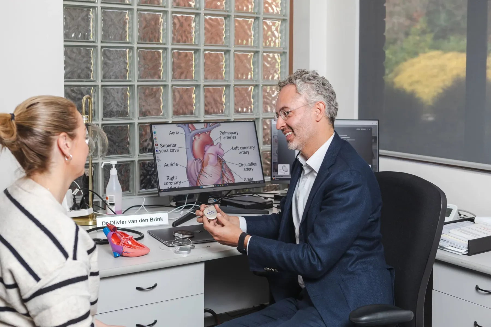

General cardiology
Consultations and everyday diagnostics to assess symptoms, monitor your heart and plan treatment.

- Procedures & tests
- 05
- Specialists
- Clinics
- 07
- Bookings
- 03 9070 6116
Procedures & tests
Select a procedure to read what it involves, how to prepare and what to expect.
01Cardiology consultationFor patients with heart problems, the initial cardiology consultation and subsequent reviews are essential parts of a diagnostic and medical treatment process. Not only do consultations play an important role…
For patients with heart problems, the initial cardiology consultation and subsequent reviews are essential parts of a diagnostic and medical treatment process. Not only do consultations play an important role in the diagnosis and treatment of a heart condition, they are also crucial in educating the patient on lifestyle changes required to prevent the condition from worsening or to hasten the recovery process.
Lifestyle changes typically include eating the right diet, avoiding certain activities, and maintaining a healthy weight. Cardiology consultations also aid in the early detection of health conditions that would likely lead to heart problems. Not every patient who schedules a consultation actually has a heart condition; some consult a cardiologist as a preventive measure.
When you see us for a cardiology consultation, you may be seen by a cardiac nurse or undergo tests like an ECG. It is helpful if you bring a list of your current medications and/or other medical conditions. You will need a referral to see one of our cardiologists.
02ECG (electrocardiogram)To find out how well your heart is working, you may need to have an electrocardiogram (ECG). An ECG is a simple and painless test that measures the electrical activity of your heart. Before an ECG, you may…
To find out how well your heart is working, you may need to have an electrocardiogram (ECG). An ECG is a simple and painless test that measures the electrical activity of your heart. Before an ECG, you may have your hair shaved or skin cleaned so the electrodes stick on your body properly. During an ECG, leads are attached to electrodes – sticky dots – that are placed on your arms, legs and chest.
The leads connect to a machine, which takes the reading. The results of your ECG will be interpreted by a trained doctor or nurse.
03Holter MonitoringA Holter monitor is a small, wearable device that keeps track of your heart rhythm. It is a noninvasive test that uses electrodes taped to your chest to check your heart’s rhythm. Your doctor may want you to…
A Holter monitor is a small, wearable device that keeps track of your heart rhythm. It is a noninvasive test that uses electrodes taped to your chest to check your heart’s rhythm. Your doctor may want you to wear a Holter monitor for one to seven days. During that time, the device records all of your heartbeats.
Your doctor uses information captured on the Holter monitor to figure out if you have a heart rhythm problem. If standard Holter monitoring doesn’t capture your irregular heartbeat, your doctor may suggest an implantable loop recorder.
04Blood Pressure MonitoringAmbulatory blood pressure (ABP) monitoring involves measuring blood pressure (BP) at regular intervals (usually every hour) over a 24 hour period while patients undergo normal daily activities, including…
Ambulatory blood pressure (ABP) monitoring involves measuring blood pressure (BP) at regular intervals (usually every hour) over a 24 hour period while patients undergo normal daily activities, including sleep. The portable monitor is worn on a belt connected to a standard cuff on the upper arm. Your cardiologist will interpret the results and inform you of its findings.
05Direct CardioversionA “DCR” is performed by a cardiologist under sedation administered by an anaesthetist. Once in a gown, we will apply DCR pads to your chest and back. The anaesthetist will then put you to sleep. Once asleep,…
What is it?
A “DCR” is performed by a cardiologist under sedation administered by an anaesthetist. Once in a gown, we will apply DCR pads to your chest and back. The anaesthetist will then put you to sleep. Once asleep, an electric current (occasionally multiple times) is delivered to your chest to attempt to “revert” your heart back to normal rhythm.
How to Prepare
Do not have anything to eat or drink (other than a sip of water for medications) for at least 6 hours prior to the test.
Please take all regular medications (including blood thinners) including the morning of the test with a small sip of water.
You will need someone to pick you up after the test and to be with you for the rest of that day / evening.
Please continue your blood thinner after the procedure.
How Long Does it Take?
Total time in the hospital is in the order of 2–3 hours which includes preparation time and recovery time. The “DCR” itself usually takes about 10 minutes.
Why do we do it?
A “DCR” is performed to attempt to restore your heart to a normal rhythm. It is most commonly performed in an arranged fashion to treat atrial fibrillation or atrial flutter. You may have also heard of the procedure being performed for other more dangerous heart rhythm disturbances in the context of an emergency.
Potential Complications
Stroke ~0.5–1% risk. This risk is minimised by taking an effective blood thinner – either warfarin, apixaban, rivaroxaban or dabigatran for at least a month prior to the procedure. Alternatively, a transesophageal echo or “TOE” may be performed prior to the test to ensure there are no pre-existing clots prior to the “DCR.”
Failure of the procedure – unfortunately we cannot successfully revert everyone back to normal rhythm. Occasionally repeat procedures are performed following a change in medication.
Pain at the site of the pads after the procedure – usually settles over 48 hours.
Allergy to the anaesthetic agent.
Specialists in general cardiology
All doctors →Other areas of care
All services →Take control of your heart health today

Book online
Request an appointment in a few minutes. Our team will be in touch to confirm a time and clinic.
Call us
03 9070 6116Best for urgent appointments. Main rooms open Mon–Fri, 9am–5pm.
Visit us
07 clinicsFrom Highett to Inverloch, with main rooms at 11 Hastings Road, Frankston.
See all locations →